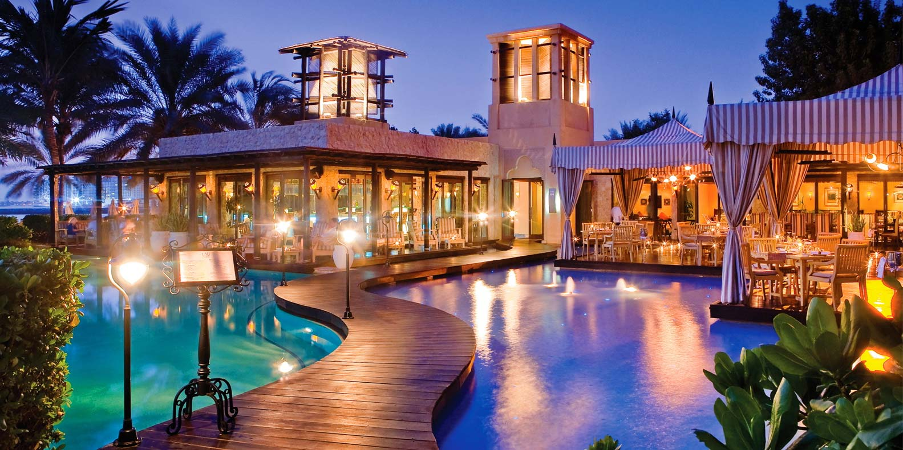
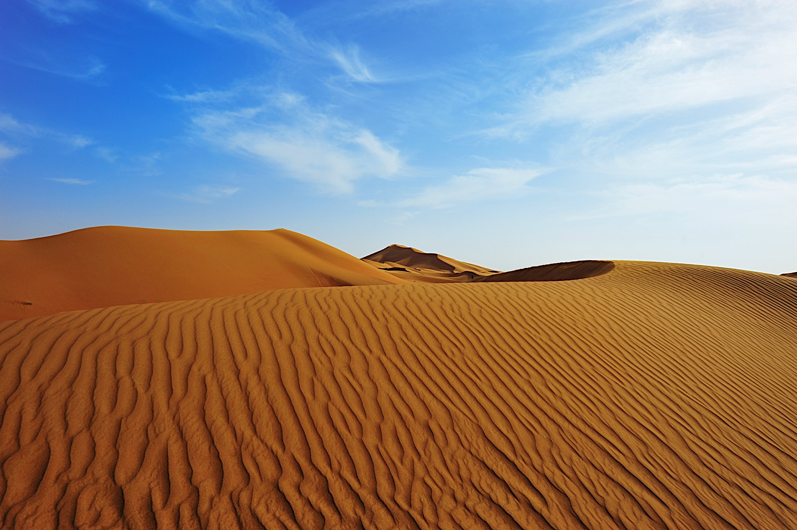
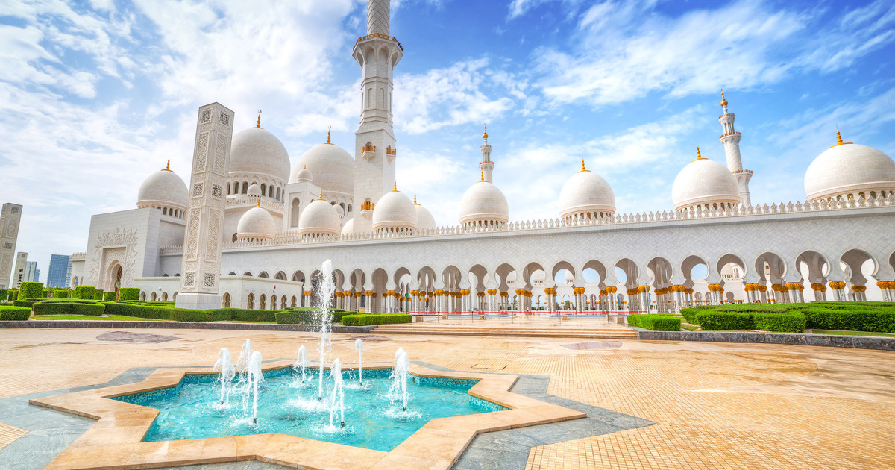
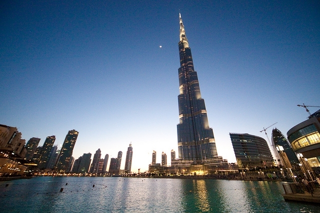

Dubaï est la ville de toutes les démesures et du luxe. Au milieu d’une population aux mœurs encore très ancrées dans la tradition,
se mêlent structures gigantesques et attractions à couper le souffle. Dubaï, véritable symbole d’extravagance, n’était au départ qu’une simple ville commerçante sans aucune prétention.
Vous cherchez un dépaysement total sans pour autant vous priver de tout le confort moderne ? Alors Dubaï est votre prochaine destination.

Les luxueux hotels
Dubaï est une destination de prestige pour le tourisme de luxe. Les hôtels sis sur le territoire des Émirats arabes unis sont
particulièrement riches en étoiles et peuvent proposer des prix exorbitants pour une nuit. Néanmoins on ne pourrait
trouver mieux en termes de splendeurs car les differents design y depassent l'entendement.

La magie du désert
Première choses à faire à Dubaï et que nous citons ici : le désert. Il semble difficilement envisageable d’aller à Dubaï sans aller voir le désert.
Géographiquement parlant, il se situe vraiment aux portes de la ville. Depuis le coeur de Dubaï, il faut moins de 40 minutes
de route pour sortir des routes tentaculaires de Dubaï et arriver dans le désert.
Plusieurs options sont possibles pour profiter du désert à Dubaï. Parmi les activités à faire :
safari en 4×4 dans les dunes
barbecue dans le désert
sortie en quad dans le désert de Dubaï
ou encore, si votre budget vous l’autorise, un vol en montgolfière

La grande mosquée de Dubaï
Aussi appelée mosquée de Jumeirah, elle vaut le détour de part son architecture tant extérieure qu’intérieure. La Grande Mosquée de Dubaï est la seule ouverte aux non-musulmans.
Cette mosquée, qui est la plus grande de Dubaï, peut accueillir 1200 personnes. Des visites en anglais sont organisées afin de vous présenter la mosquée de Jumeirah.
Un monument à ne rater sous aucun prétexte. Vous serez agréablement surpris par son architecture, d’une grande beauté.
Cette mosquée a été intégralement construite en pierres blanches et elle est illuminée lorsque tombe la nuit.

Burj Khalifa
Plus grande tour du monde avec ses 828 mètres de hauteur, la tour Burj Khalifa fait partie des monuments à ne pas rater si vous vous rendez à Dubaï. Facilement repérable à 95 km à la ronde,
cette tour se compose de bureaux, d’appartements de luxe et même d’un hôtel Armani. Cet impressionnant gratte-ciel possède pas moins de 160 étages.
L’un des deux ascendeurs de la Burj Khalifa vous conduira jusqu’au 124ème étage. Ce n’est pas le 7ème ciel, mais la terrasse panoramique qui s’y trouve vous permettra de profiter d’une très jolie vue.
Sensation forte garantie.